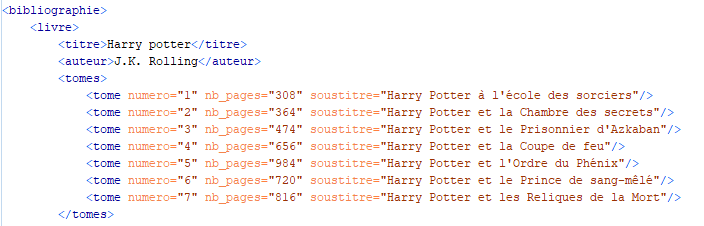

Partie 1
Rédiger une DTD pour une bibliographie. Tester cette DTD avec un fichier XML que l'on écrira ex-nihilo et validera.
Partie 2 : Modifier la DTD précédente...
...en ajoutant un attribut optionnel soustitre à l'élément titre
...en faisant de l'élément tome un élément vide et en lui ajoutant un attribut requis nb_pages et un attribut optionnel soustitre
...en faisant de l'élément nom_journal un attribut de l'élément journal et en lui donnant comme valeur par défaut Feuille de Chou